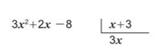
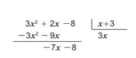
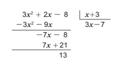

Explicación
Divida el polinomio 3x² + 2x - 8 entre el binomio x+3
Paso 1
Se divide 3x² por x: (3x² /x) = 3x se ubica el resultado bajo el divisor.

Paso 2
Se multiplica 3x por x + 3: 3x (x+3) = 3x² + 9x. El resultado se resta al dividendo.

Paso 3
Se divide -7x entre x: (-7x) / x = -7. El resultado se ubica después de 3x. Se repite el paso anterior con -7.

Se observa que al dividir 3x² + 2x - 8 entre x+3 se encontró el cociente 3x - 7 con el grado disminuido en 1 respecto al grado del dividendo y la constante 13 como residuo.
La división de un polinomio ordenado entre un binomio de la forma x ± a se efectúa con los siguientes pasos:
- 1. El primer término del cociente se obtiene dividiendo el primer término del dividendo por .x.
- 2. El resultado del paso anterior se multiplica por el divisor, este producto se resta al polinomio dividendo.
- 3. Se continúan ejecutando los pasos 1. y 2., esta vez tomando el primer término del resultado en el paso 2. para encontrar el siguiente una constante (un número).
Ejercicios
Efectúe las siguientes divisiones:
- a) x² - x - 6 entre x + 3
- b) 2x² - 5x + 7 entre x - 4